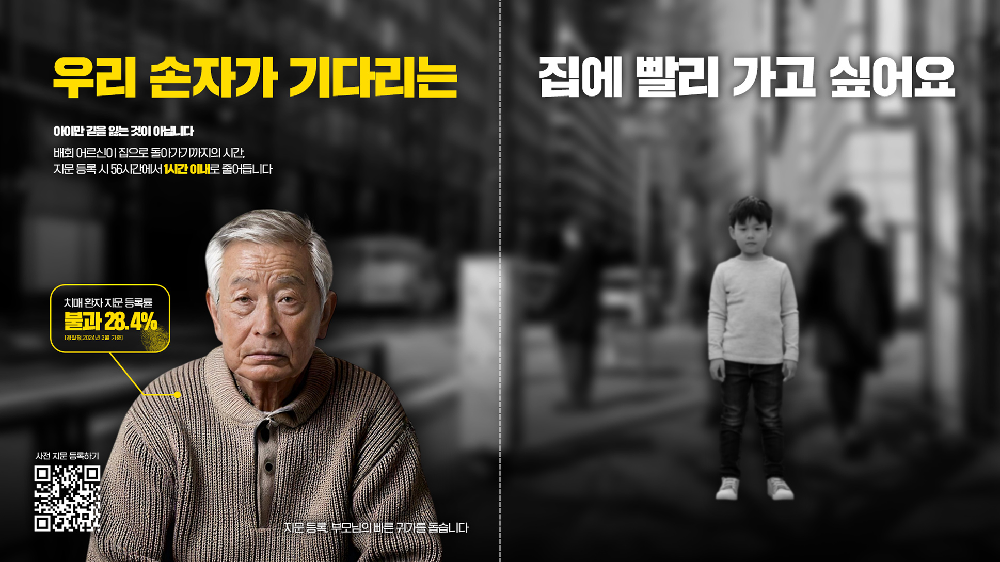
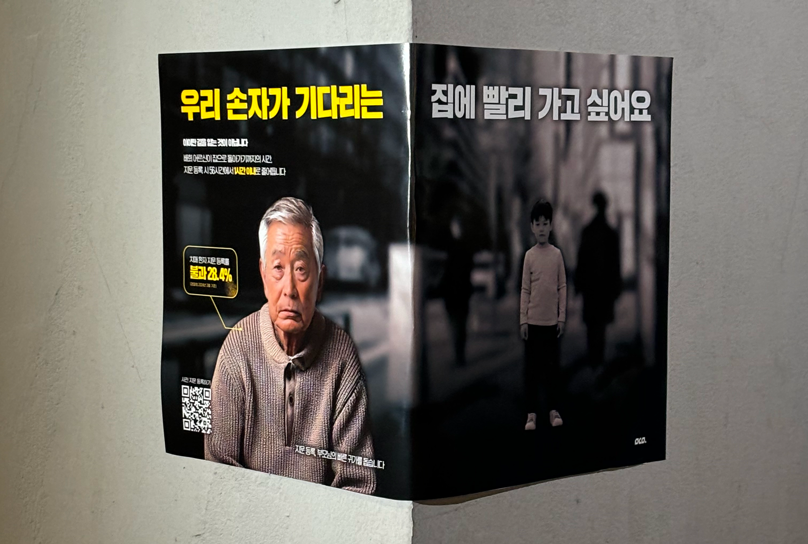

앰비언트 광고 · 사이드 프로젝트
치매 노인 지문 사전등록 제도는 무심코 지나치기 쉬운 공공 캠페인 주제였습니다. 가로로 긴 포스터를 골목 기둥에 꺾어 부착해, 시선의 흐름 자체로 메시지를 전달하도록 설계했습니다.
Concept
"우리 손자가 기다리는" / "집에 빨리 가고 싶어요" — 두 문장이 마주 보게 배치해, 치매 어르신의 이야기임을 뒤늦게 인지하게 되는 반전 구조로 설계했습니다.
지문 사전등록 시 배회 어르신의 귀가 시간 단축 (경찰청, 2024.03 기준 지문 등록률 28.4%)
Output

